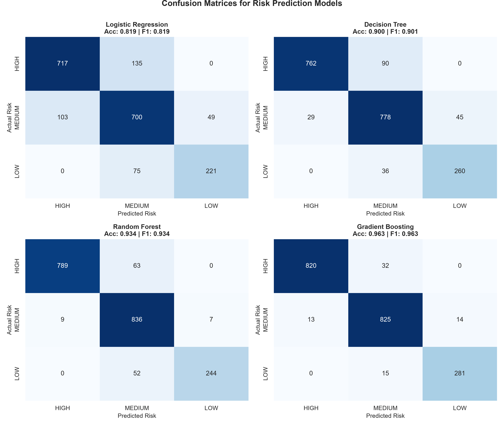
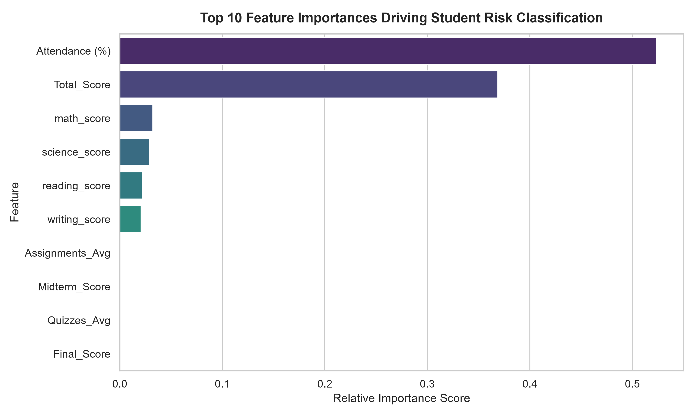
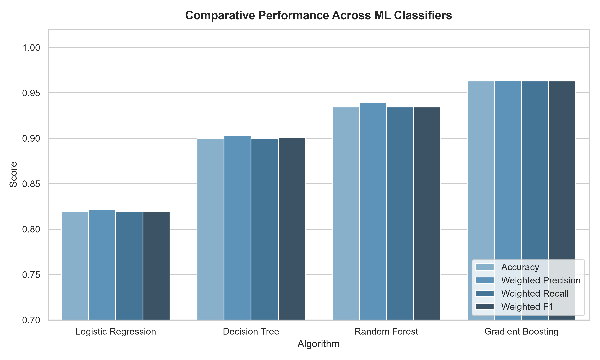
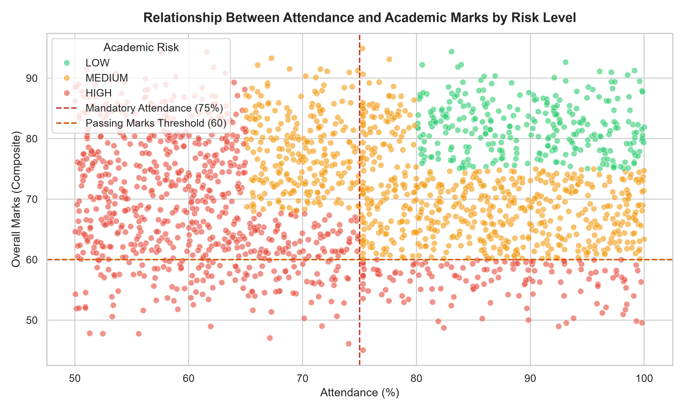

Student Academic Telemetry
Adjust telemetry values to evaluate real-time academic risk prediction.
62.0%
30%
75% Cutoff
100%
Examinations & Coursework Scores
Core Subject Breakdown
Quick Presets:
Diagnostic Result
HIGH RISKRecorded Attendance
62.0%
⚠️ Below 75% Cutoff
Composite Marks
56.4
⚠️ Below Passing (60)
// System Output Format:
Student: Alex Morgan (S1048)
Attendance: 62%
Marks: 56.4
Risk: HIGH
Recommendation: Immediate attendance recovery required...
Tailored Intervention Plan
Immediate attendance recovery required (current: 62.0% vs 75% cutoff). Aggregate marks (56.4) are critical; mandatory faculty mentoring initiated. Enroll in remedial workshops for Mathematics (score: 44).
Institutional Student Intervention Report
Search, filter, and inspect predictive risk assessments across 1,000 processed student records.
Showing 0 matching students
| Student | Attendance | Marks | Risk Level | Tailored Recommendation |
|---|
Model Benchmark Comparison
Evaluation across 4 algorithms using an 80/20 Stratified Split on raw telemetry features.
| Algorithm | Accuracy | Weighted Precision | Weighted Recall | Weighted F1 | Macro F1 | Status |
|---|---|---|---|---|---|---|
| Logistic Regression (L2) | 81.90% | 82.13% | 81.90% | 81.94% | 81.10% | Baseline |
| Decision Tree (depth=6) | 90.00% | 90.32% | 90.00% | 90.07% | 89.30% | Non-Linear |
| Random Forest (n=100) | 93.45% | 93.96% | 93.45% | 93.45% | 92.53% | Ensemble |
| Gradient Boosting (n=100) | 96.30% | 96.34% | 96.30% | 96.31% | 96.04% | Champion |
Confusion Matrices Grid

Feature Importance (Gradient Boosting)

Model Comparison Metrics

Attendance vs Marks by Risk
